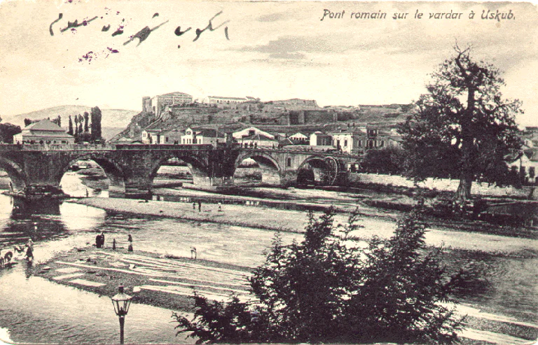
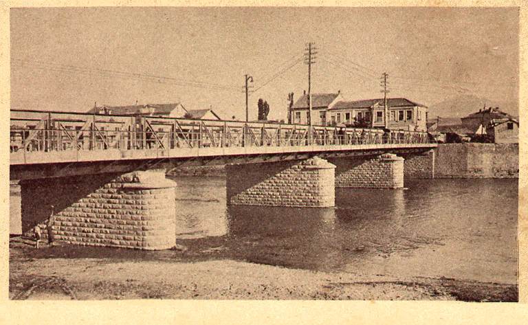
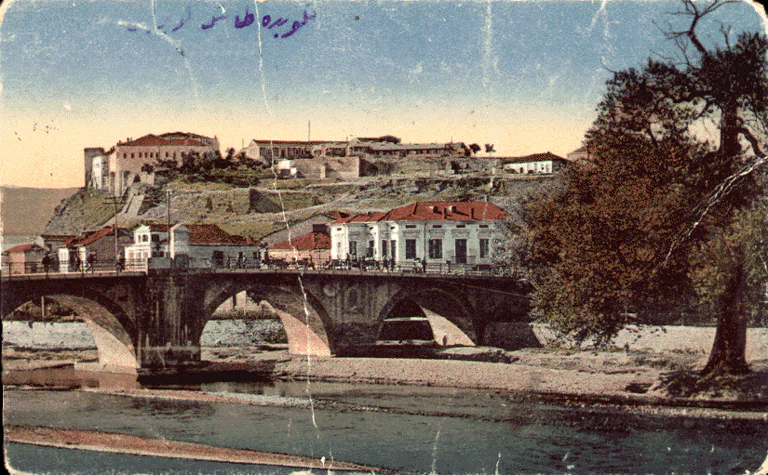
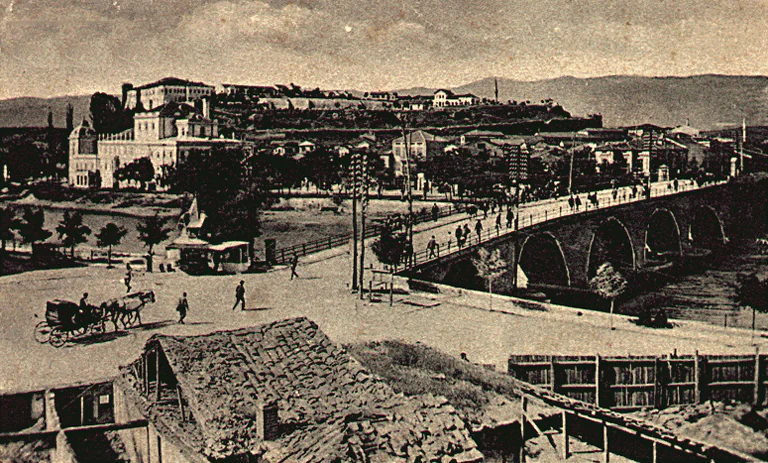
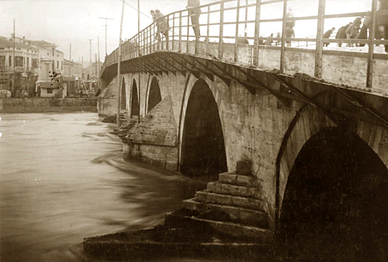
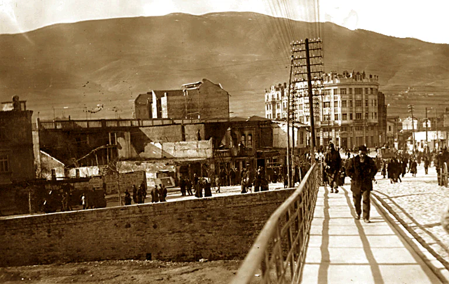
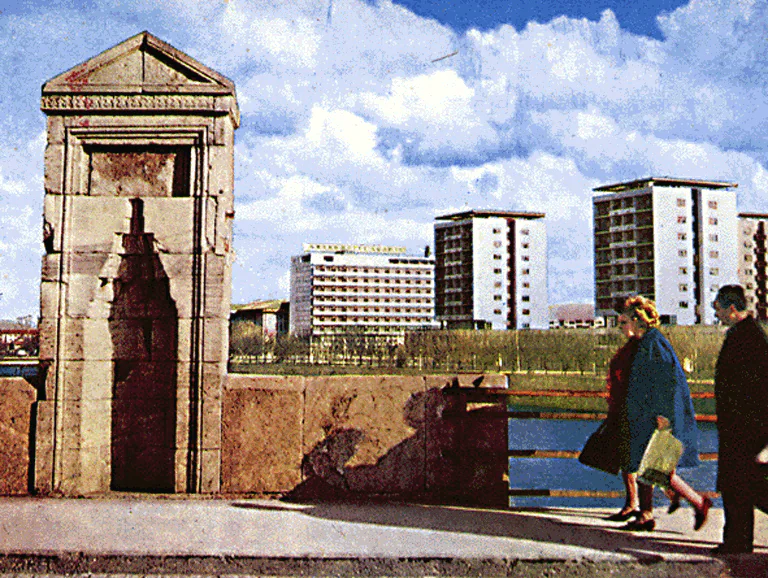

Skopje 1916 - 1917 bridge
Documents from the Balkan Wars
- Year
- 1916-1917
- Length
- 00:13

In the centre of the city, on the Vardar, stands a monumental stone bridge (popularly called the Stone Bridge). According to some Turkish sources it was built in the second half of the 15th century, under Sultan Mehmed II. According to the latest research, from the bridge's reconstruction in 1990, it is thought to have been built under Justinian I in the 6th century. It is built of well-dressed stone blocks, and its structure rests on mighty piers joined by thirteen semicircular arches. In 1905 concrete walkways were built, which had previously been covered with planks. In 1937 it was widened with consoles, onto which the walkways were moved. The photograph shows Skopje at the end of the 19th century: the Stone Bridge and the old plane tree. Top right is the Skopje fortress - Kale with the barracks.

The Stone Bridge - end of the 19th century. In the background on the left is the Burmali Mosque.
The Stone Bridge - end of the 19th century. In the background on the left is the Burmali Mosque.

Skopje at the end of the 19th and beginning of the 20th century (summer) - view of the Stone Bridge. In the foreground is a telephone pole with a postbox, and right next to it a street lamp, the first form of city utilities. As it is summer, pedestrians shelter from the sun with umbrellas. Ox carts carried goods, and horse cabs served as public transport. Right next to the bridge on the right is a large water wheel.

Skopje at the end of the 19th and beginning of the 20th century (winter) - view of the Stone Bridge. In the foreground is a telephone pole with a postbox, and right next to them a street lamp, the first form of city utilities. The streets are unpaved and muddy. In the background are the Jewish quarter and the Skopje fortress - Kale.

Panorama of the Stone Bridge at the beginning of the 20th century.

The Stone Bridge - around 1905. In the background, top left, is the Skopje fortress - Kale with the barracks. On the right is the old plane tree.

The Stone Bridge at the end of the 19th and beginning of the 20th century. Top right is the Skopje fortress - Kale.

Skopje in the Turkish period - beginning of the 20th century. The photograph shows that one half of the Stone Bridge has a stone parapet and the other a temporary railing of iron and wood; in 1905 the replacement of the stone parapet with an iron one began. In the left corner, behind the Stone Bridge, is the Turkish theatre. Right next to the bridge on the right is a large water wheel. On the right is the old plane tree on which Karpoš's dead body was hung right after his uprising was crushed in 1689. In the background the whole Skopje fortress - Kale can be seen, with the houses of the Jewish quarter. Interesting too are the women bleaching cloth in the clean waters of the Vardar, in the foreground of the photograph.

A group of Turks on the Stone Bridge - beginning of the 20th century. Notice that the pavements of the bridge are covered with planks.

The railway bridge on the Vardar in Skopje - end of the 19th century.

A stone bridge on the Pčinja river - near Skopje (it no longer exists). Judging by the man standing on top of the bridge, it was about 15 metres above the water. (the 1910s)

Skopje in 1902. The photograph shows the wooden bridge, and behind it the old "Boges" café, where the first theatre performances were held. Above it is the Skopje fortress - Kale with the military barracks.

The Stone Bridge - 1905. On the left, behind it, is the Turkish theatre, and at the top the Skopje fortress - Kale.

View towards the right bank of the Vardar through the branches of the old plane tree - around 1910: part of the Stone Bridge, the Burmali Mosque and the shops in front of it.

Skopje before 1912. The Stone Bridge with consoles and an iron railing. On the right is the old plane tree, and above is the Skopje fortress - Kale.

Skopje during the Balkan War. In the background the Burmali Mosque.

View of part of the Stone Bridge towards the Skopje fortress - Kale (around 1910)

View of part of the Stone Bridge, with the Turkish theatre in the background on the left. Above it rises the Skopje fortress - Kale. (around 1910)

The Stone Bridge with a group of people on it - around 1913

The Stone Bridge on the Vardar in Skopje - around 1913

The Stone Bridge on the Vardar in Skopje - around 1913. In the background, top right, is the Skopje fortress - Kale.

Skopje in 1912 - a painting. The Stone Bridge and the Burmali Mosque, with a beautiful green belt of poplars behind. Classical architecture has been inserted, and the new quays are a new urban element. The groups of residential, trading and crafts buildings in front of the bridge are part of the composition, with traditional features and elements of European influence.

The Iron Bridge on the Vardar in Skopje with a view towards the old school, St Mina and the Holy Mother of God - around 1920.

The Iron Bridge, built in 1905. In the background is the building of the first Skopje University. (1915)

The Iron Bridge, built in 1905. In the background is the building of the first Skopje University. (the 1920s.)

The Iron Bridge on the Vardar in Skopje, built in 1905. In the background is the building of the first Skopje University. (the 1920s)

The Iron Bridge, built in 1905. (the 1920s)

The Iron Bridge on the Vardar in Skopje with a view of the buildings on the "Dimitar Vlahov" quay. (the 1920s)

Skopje, around 1920. Part of the city square in front of the Stone Bridge. The first kiosks for passers-by and sales, with distinctive architectural details, especially their roofs. The bridge has been widened with pedestrian walkways. At the top in the background is the Skopje fortress - Kale.

Skopje, around 1920. Part of the city square in front of the Stone Bridge. In front of and on the Stone Bridge are small structures for posting notices to the citizens. The bridge has been widened with pedestrian walkways. In the background, top left, is the Skopje fortress - Kale.

The Stone Bridge with a group of people watching the high water of the Vardar. (the 1920s)

The Stone Bridge - 1920. The Ottoman Bank can be seen in the background.

View of the Stone Bridge towards the Old Town and the Pajko quarter, with the surgery of the dentist Dr Ruben and the Ottoman Bank - around 1927.

View of the Stone Bridge towards the Old Town, the bazaar and the Gazi Baba hill. Right next to the bridge, on the right, was the surgery of the dentist Dr Ruben, and a little further right the Ottoman Bank. Between them was a little square with a horse-cab stand, and in the middle of the square the monument to the fallen in the Balkan War - around 1927.

View of the Stone Bridge towards the Old Town, the bazaar and the Gazi Baba hill. Right next to the bridge, on the right, was the surgery of the dentist Dr Ruben, and a little further right the Ottoman Bank. Between them was a little square with a horse-cab stand, and in the middle of the square the monument to the fallen fighters - around 1927.

View of the Stone Bridge towards the Old Town and the Pajko quarter, with the surgery of the dentist Dr Ruben and the Ottoman Bank - around 1927.

View towards the right bank of the Vardar with part of the bridge and the Officers' Club - the 1930s. On the left is what remains of the old plane tree, cut down, on which Karpoš's dead body was hung in 1689, after the uprising was crushed.

View of part of the Stone Bridge, the old plane tree and the Skopje fortress - Kale - around 1920.

Skopje, around 1920. The Stone Bridge with the Skopje fortress - Kale in the background. In the foreground, cloth is being bleached in the clean water of the Vardar.

View of the little wooden bridge and the quay on the right bank of the Vardar. The buildings have neoclassical and Baroque details. The street is today's "Ilindenska". Among the buildings is the Secondary Music School. In the foreground is the little wooden bridge that led to the National Theatre.

The little wooden bridge on the Vardar, with the Officers' Club in the background. Next to it are the bank and the old post office - end of the 1920s.

View of the little wooden bridge on the Vardar, with the Officers' Club, the old post office and the bank in the background - around 1930.

View towards the Skopje fortress - Kale with the barracks. Below it is the Jewish quarter. In the foreground is the little wooden bridge - the 1950s.

View towards the National Theatre and the little wooden bridge - the 1930s.

The Stone Bridge - the 1930s. The National Theatre in the background, and above it the Skopje fortress - Kale.

View of part of the square and the Stone Bridge. In the background on the left are the National Theatre and the Skopje fortress - Kale. Notice the horse cab, the main means of transport for the citizens. In the foreground, buildings demolished to make way for the National Bank - around 1930.

High water on the Vardar. The bridge is half under water. The photograph was taken from the right towards the left bank - the 1930s.

Reconstruction and new paving of the Stone Bridge. View of the Ristić Palace and the first kiosks - around the 1930s.

View from the Stone Bridge towards the square. On the left the site is being cleared to build the National Bank - the 1930s.

View from the left bank of the Vardar towards the Stone Bridge and the Officers' Club - the 1930s.

The Stone Bridge on the Vardar - around 1930. In the background is the National Theatre, and top right the Skopje fortress - Kale.

The Stone Bridge - the 1950s.

Part of the Stone Bridge. In the background is the "Grand" hotel. - the 1960s

The Stone Bridge with the Skopje fortress - Kale in the 1960s, before the quay was landscaped.

View of the Stone Bridge and the Skopje fortress - Kale. (the 1970s)

The Stone Bridge in the 1970s, with the middle quay area.

The Stone Bridge and the square in the 1970s.

View from the right towards the left bank of the Vardar, of the Stone Bridge, part of the square and the new post office in the background. (the 1970s)

Today's "Goce Delčev" bridge, photographed from the Skopje fortress - Kale. (the 1990s)

Documents from the Balkan Wars
 Aqueduct4 postcards
Aqueduct4 postcards Kale30 postcards
Kale30 postcards Bridges60 postcards
Bridges60 postcards Quay58 postcards
Quay58 postcards Square46 postcards
Square46 postcards Buildings66 postcards
Buildings66 postcards Christian churches19 postcards
Christian churches19 postcards Muslim buildings33 postcards
Muslim buildings33 postcards Officers' Club29 postcards
Officers' Club29 postcards Theatre28 postcards
Theatre28 postcards Railway station13 postcards
Railway station13 postcards Schools36 postcards
Schools36 postcards Parks12 postcards
Parks12 postcards Markets18 postcards
Markets18 postcards Streets38 postcards
Streets38 postcards Panorama I60 postcards
Panorama I60 postcards Panorama II30 postcards
Panorama II30 postcards Collages55 postcards
Collages55 postcards Floods9 postcards
Floods9 postcards Earthquake27 postcards
Earthquake27 postcards Skopje 200026 postcards
Skopje 200026 postcards